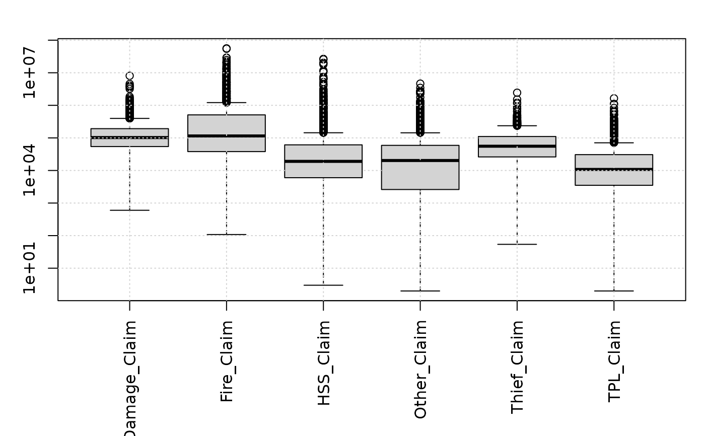
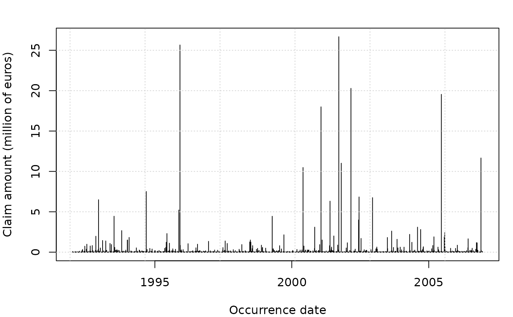

French individual claim settlements
freclaimset9207.Rdfreclaim9207multi, freclaimset3fire9207 and freclaimset3dam9207
comes from the same dataset of 282,000 claims of property and casualty policies
of a French unknown insurer for commercial insurance between 1992 and 2007.
freclaimset3fire9207 and freclaimset3dam9207 consist
of randomized claims settlements of the fire/damage guarantees only.
58,056 claims are listed in the dataset for which both paid and incurred (F/F)
amounts (EUR) are available.
freclaim9207multi contains aggregate claim amounts by guarantee type
and period of some property-casualty commercial lines in France
between 1992 and 2007.
A 3-day period has been used to perform the aggregation process,
see variable Occur, the first day of occurence period.
The guarantee type is structured as
HSS=Hail, storm, snow: claims from natural disaster: hail, storm, snow, generally known as Tempete-Grele-Neige in France.Machine=Machine break: claims from machine breaks.Other=Other guarantees: other claims, e.g. legal protection, non-vehicle thief.PF=Property fire: claims related to fires.PWL=Property water leak: claims related to water leaks.TPL=Third-part liability: claims from third-part liabilities (both material and bodily injuries).Vehicle=Vehicle: claims related to vehicle, e.g. windscreen breaks, vehicle thiefs.
The resulted dataset contains 1,944 rows with claim variables named XY_Claim for guarantee XY.
These 7 guarantee groups are described by 5 explanatory variables
Employee: The aggregate employee number.Sites: The aggregate site number.Area: The insured area of buildings.Revenue: The aggregate revenue of companies.Goods: A proxy for the aggregate insured values of goods.
Explanatory variables are named on the same principle as claim amount. The resulted dataset contains 43 variables.
Format
freclaimset3fire9207 and freclaimset3dam9207 are data frames with 37 columns:
NbEmployeeThe category of employee number.
NbSiteThe category of site number.
SurfaceThe insured surface.
RiskCategAn unknown risk category.
inc_Y15-inc_Y0inc_Yjis the incurred amount of the claim at the end of year 2007-j, i.e.inc_Y0is the latest estimate andinc_Y15is the oldest estimate.paid_Y15-paid_Y0paid_Yjis the paid amount of the claim at the end of year 2007-j, i.e.paid_Y0is the latest estimate andpaid_Y15is the oldest estimate.OccurDateThe occurence date. Note that
paid_Yj/inc_Yjis never empty (i.e.NA) even if the claim did occur after the year 2007-j.
freclaim9207multi is a data frame of 43 columns:
OccurA
Datefor the first day of occurrence period.HSS_ClaimA numeric for Hail-Storm-Snow related claim amounts
Machine_ClaimA numeric for Machine-breaks related claim amounts
Other_ClaimA numeric for Other related claim amounts
PF_ClaimA numeric for Property-Fire related claim amounts.
PWL_ClaimA numeric for Property-Water-Leak related claim amounts
TPL_ClaimA numeric for Third-Part-Liability related claim amounts
Vehicle_ClaimA numeric for Vehicle related claim amounts
PF_Employee,PWL_Employee,HSS_Employee,Machine_Employee,Other_Employee,Vehicle_Employee,TPL_EmployeeA factor for the (total) employee number category:
(0,500],(500,1e+03],(1e+03,2e+03],(2e+03,4e+03],(4e+03,Inf].PF_Sites,PWL_Sites,HSS_Sites,Machine_Sites,Other_Sites,Vehicle_Sites,TPL_SitesA factor for the (total) company site number category:
(0,10],(10,20],(20,30],(30,100],(100,200],(200,Inf].PF_Area,PWL_Area,HSS_Area,Machine_Area,Other_Area,Vehicle_Area,TPL_AreaA factor for the (total) company ground area (squared meter) category:
(0,1e+03],(1e+03,5e+03],(5e+03,1e+04],(1e+04,5e+04],(5e+04,Inf].PF_Revenue,PWL_Revenue,HSS_Revenue,Machine_Revenue,Other_Revenue,Vehicle_Revenue,TPL_RevenueA factor for the (total) company revenue (euro) category:
(0,1e+03],(1e+03,5e+03],(5e+03,1e+04],(1e+04,5e+04],(5e+04,Inf]PF_Goods,PWL_Goods,HSS_Goods,Machine_Goods,Other_Goods,Vehicle_Goods,TPL_GoodsA factor for the (total) proxy insured goods value (euro) category:
(0,1e+04],(1e+04,1e+05],(1e+05,2e+05],(2e+05,5e+05],(5e+05,1e+06],(1e+06,Inf]
Examples
# (1) load of data
#
data(freclaimset3fire9207)
data(freclaimset3dam9207)
data(freclaim9207multi)
#> Warning: data set ‘freclaim9207multi’ not found
# (2) some examples of claims
#
head(freclaimset3fire9207)
#> NbEmployee NbSite Surface RiskCateg inc_Y15 inc_Y14 inc_Y13 inc_Y12
#> 1 (1e+03,1e+04] (0,10] (0,10] C1 0.00 680.40 315.64 315.64
#> 2 (10,100] (0,10] (0,10] C1 0.00 2760.41 2760.41 2760.41
#> 3 (10,100] (0,10] (0,10] C1 235.79 235.79 235.79 235.79
#> 4 (10,100] (0,10] (0,10] C1 0.00 0.00 1471.58 1471.58
#> 5 (10,100] (0,10] (0,10] C1 706.20 586.70 586.70 586.70
#> 6 (100,1e+03] (0,10] (0,10] C1 4327.49 4327.49 4327.49 4327.49
#> inc_Y11 inc_Y10 inc_Y9 inc_Y8 inc_Y7 inc_Y6 inc_Y5 inc_Y4 inc_Y3
#> 1 315.64 315.64 315.64 315.64 315.64 315.64 315.64 315.64 315.64
#> 2 2760.41 2760.41 2760.41 2760.41 2760.41 2760.41 2760.41 2760.41 2760.41
#> 3 235.79 235.79 235.79 235.79 235.79 235.79 235.79 235.79 235.79
#> 4 1471.58 1471.58 1471.58 1471.58 1471.58 1471.58 1471.58 1471.58 1471.58
#> 5 586.70 586.70 586.70 586.70 586.70 586.70 586.70 586.70 586.70
#> 6 4327.49 4327.49 4327.49 3497.87 3497.87 3497.87 3497.87 3497.87 3497.87
#> inc_Y2 inc_Y1 inc_Y0 paid_Y15 paid_Y14 paid_Y13 paid_Y12 paid_Y11 paid_Y10
#> 1 315.64 315.64 315.64 0.00 315.64 315.64 315.64 315.64 315.64
#> 2 2760.41 2760.41 2760.41 0.00 2760.41 2760.41 2760.41 2760.41 2760.41
#> 3 235.79 235.79 235.79 235.79 235.79 235.79 235.79 235.79 235.79
#> 4 1471.58 1471.58 1471.58 0.00 0.00 1471.58 1471.58 1471.58 1471.58
#> 5 586.70 586.70 586.70 0.00 586.70 586.70 586.70 586.70 586.70
#> 6 3497.87 3497.87 3497.87 386.44 3497.87 3497.87 3497.87 3497.87 3497.87
#> paid_Y9 paid_Y8 paid_Y7 paid_Y6 paid_Y5 paid_Y4 paid_Y3 paid_Y2 paid_Y1
#> 1 315.64 315.64 315.64 315.64 315.64 315.64 315.64 315.64 315.64
#> 2 2760.41 2760.41 2760.41 2760.41 2760.41 2760.41 2760.41 2760.41 2760.41
#> 3 235.79 235.79 235.79 235.79 235.79 235.79 235.79 235.79 235.79
#> 4 1471.58 1471.58 1471.58 1471.58 1471.58 1471.58 1471.58 1471.58 1471.58
#> 5 586.70 586.70 586.70 586.70 586.70 586.70 586.70 586.70 586.70
#> 6 3497.87 3497.87 3497.87 3497.87 3497.87 3497.87 3497.87 3497.87 3497.87
#> paid_Y0 OccurDate
#> 1 315.64 1992-04-19
#> 2 2760.41 1992-07-31
#> 3 235.79 1992-11-16
#> 4 1471.58 1992-03-28
#> 5 586.70 1992-08-19
#> 6 3497.87 1992-08-02
tail(freclaimset3fire9207)
#> NbEmployee NbSite Surface RiskCateg inc_Y15 inc_Y14 inc_Y13
#> 58051 (1e+03,1e+04] (0,10] (0,10] C5 0 0 0
#> 58052 (10,100] (0,10] (0,10] C5 0 0 0
#> 58053 (0,10] (0,10] (100,1e+03] C5 0 0 0
#> 58054 (100,1e+03] (0,10] (0,10] C5 0 0 0
#> 58055 (100,1e+03] (0,10] (0,10] C5 0 0 0
#> 58056 (0,10] (0,10] (100,1e+03] C5 0 0 0
#> inc_Y12 inc_Y11 inc_Y10 inc_Y9 inc_Y8 inc_Y7 inc_Y6 inc_Y5 inc_Y4 inc_Y3
#> 58051 0 0 0 0 0 0 0 0 0 0
#> 58052 0 0 0 0 0 0 0 0 0 0
#> 58053 0 0 0 0 0 0 0 0 0 0
#> 58054 0 0 0 0 0 0 0 0 0 0
#> 58055 0 0 0 0 0 0 0 0 0 0
#> 58056 0 0 0 0 0 0 0 0 0 0
#> inc_Y2 inc_Y1 inc_Y0 paid_Y15 paid_Y14 paid_Y13 paid_Y12 paid_Y11
#> 58051 0 0 17649.13 0 0 0 0 0
#> 58052 0 0 2007.61 0 0 0 0 0
#> 58053 0 0 415.03 0 0 0 0 0
#> 58054 0 0 18900.00 0 0 0 0 0
#> 58055 0 0 272194.52 0 0 0 0 0
#> 58056 0 0 399957.97 0 0 0 0 0
#> paid_Y10 paid_Y9 paid_Y8 paid_Y7 paid_Y6 paid_Y5 paid_Y4 paid_Y3 paid_Y2
#> 58051 0 0 0 0 0 0 0 0 0
#> 58052 0 0 0 0 0 0 0 0 0
#> 58053 0 0 0 0 0 0 0 0 0
#> 58054 0 0 0 0 0 0 0 0 0
#> 58055 0 0 0 0 0 0 0 0 0
#> 58056 0 0 0 0 0 0 0 0 0
#> paid_Y1 paid_Y0 OccurDate
#> 58051 0 1287.38 2007-07-13
#> 58052 0 2007.61 2007-05-04
#> 58053 0 415.03 2007-03-20
#> 58054 0 0.00 2007-02-12
#> 58055 0 0.00 2007-10-23
#> 58056 0 0.00 2007-11-12
# (3) some plots
#
par(mar=c(7,3,2,1))
boxplot(freclaim9207multi[, grep("Claim", colnames(freclaim9207multi))], log="y",
las=3)
grid()

par(mar=c(4,4,2,1))
plot(freclaim9207multi$Occur, freclaim9207multi$HSS_Claim/1e6, type = "h",
xlab="Occurrence date", ylab="Claim amount (million of euros)")
grid()
